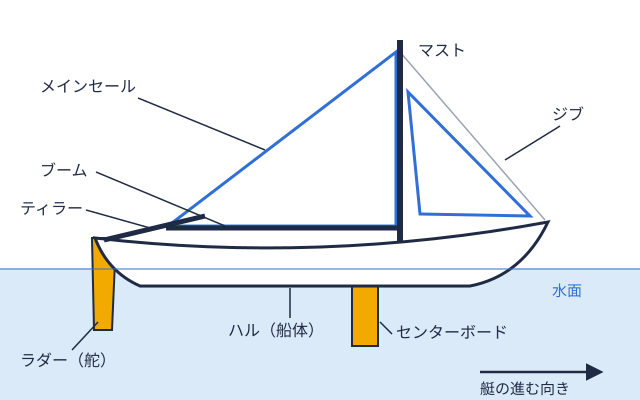

部活運営 2026-09-28
大学ヨット部の艇はどう更新される？ OB会からの艇の寄贈と父母会・後援会による支援のしくみ
大学ヨット部の艇の更新は、部費だけでは難しく、OB・OG会による艇の現物寄贈と、父母会・後援会の援助金が主な支えになっている例があります。資金調達というと寄付金や協賛金を集める場面が思い浮かびますが、お金そのものではなく「艇という現物」を譲り受けたり、制度を通じて援助金を受け取ったりする支援のかたちもあります。この記事では、こうした2つの支援の実例を整理します。OB・OG会による金銭面の寄付や大学基金については、大学基金・OB会による資金支援のしくみで扱っており、この記事では艇そのものの寄贈と、父母会・後援会の援助金に絞って説明します。
艇の更新に寄贈・援助が効く理由
大学ヨット部の多くが使う470級全長4.7mの2人乗り競技用ヨット。大きな追い風用の帆とワイヤーを使う。  の新艇は、決して小さな買い物ではありません。目安として、ヤマハ発動機が2019年5月8日に発表した470級ニューモデル「YAMAHA 470 CPH」のメーカー希望小売価格は、船体の工場渡し価格で270万円（消費税抜き）とされています。この価格にはセール風の力を受けて艇を進ませる布製の帆。艇には大きさの違う帆を組み合わせて使う。
の新艇は、決して小さな買い物ではありません。目安として、ヤマハ発動機が2019年5月8日に発表した470級ニューモデル「YAMAHA 470 CPH」のメーカー希望小売価格は、船体の工場渡し価格で270万円（消費税抜き）とされています。この価格にはセール風の力を受けて艇を進ませる布製の帆。艇には大きさの違う帆を組み合わせて使う。
艇の購入費の全体像や、中古艇・レンタルといった選択肢は、大学ヨット部の費用を整理した記事や艇の購入・中古・レンタルの費用を整理した記事で扱っています。こうした金額を部費の積み立てだけでまかなうのは難しい場合があり、OB・OG会による艇の寄贈や、父母会・後援会の援助金が、艇の更新を支える手段になっています。
艇そのものを譲り受ける「現物寄贈」という支援
OB・OG会による支援というと寄付金のイメージが強いですが、艇そのものを寄贈するケースもあります。
富山大学：創部60年の節目に届いたレース艇2艇
富山大学では2023年8月21日、ヨット部OB会から大学へのレース用ヨット2艇の寄贈に対して、感謝状の贈呈式が行われました。贈呈式にはOB会長をはじめOB会の幹部と、当時の主将が出席し、学長からOB会長へ直接感謝状が手渡されたと、大学の公式ページに掲載されています。
この寄贈の背景には、同部が2022年11月に創部60年で初めて全日本インカレスナイプ級に出場し、総合15位・国立大学の中では4位という結果を残したことがあります。OB会が今後の活躍を期待して寄贈したとされています。
艇という高額な備品を、金銭ではなく現物のまま引き継ぐ支援のかたちであり、大学側が公式に感謝状という形で応えている点も特徴です。大学の情報は富山大学のページでも確認できます。
岡山大学：OB・OG会から470級の新艇（2025年）
岡山大学では2025年7月3日、ヨット部のOB・OGで構成される会から、470級の新艇が寄贈されました。大学は2025年8月2日付のプレスリリースで、この寄贈に対する感謝状贈呈式を実施したと発表しています。同じ会からは、これまでにも度々寄贈を受けているとされており、一度きりではなく継続的に艇の更新を支える例といえます。
中央大学：卒業生から引き継がれる愛艇
中央大学ヨット部のOB・OGサイトでも、艇の現物寄贈の例が紹介されています。昭和30年代に卒業したOBから、愛用していたA級ディンギー帆で走る小型のヨット。大学ヨット部で使う470級やスナイプ級がこれにあたる。のFRP艇が部に寄贈されたことが「最新のトピック」として掲載されており、何十年も前に卒業した先輩から現役部員へと艇が引き継がれている実情がうかがえます。
現物寄贈は、部として艇を新規に購入する費用そのものを圧縮できる場合があるだけでなく、卒業生が競技を離れたあとも「自分の艇が後輩の練習を支えている」という形で部とのつながりを保てる点も、金銭的な寄付とは異なる魅力といえます。大学の情報は中央大学のページから確認できます。
父母会・後援会による援助金というしくみ
もうひとつ見逃せないのが、大学の父母会・後援会という制度を通じた資金援助です。OB・OG会が卒業生の組織であるのに対し、父母会・後援会は在学生の保護者を中心とした組織で、大学の課外活動全般を支える役割を担っています。大学が課外活動団体に出す助成金・奨励金については、大学ヨット部が大学から受けられる補助金を整理した記事も参考になります。
工学院大学：援助金の申請サイクルが年間スケジュールに組み込まれている
工学院大学ヨット部では、大学後援会（ご父母の会）からクラブ活動への援助を目的とした寄付を受ける仕組みがあります。援助金には毎年申請できる「一般申請」と、隔年でしか申請できない「特別申請」の2種類があり、部は毎年6月に申請書を提出して、合宿費など年間に必要な予算をまかなう資金を確保しています。
援助金の申請時期・様式があらかじめ決まっていることで、部の役職者（主務・会計など）が年間スケジュールの一部として資金確保の手続きを組み込みやすくなっている点が特徴です。申請時期を年間の収支にどう組み込むかは、大学ヨット部の予算の組み方を整理した記事で説明しています。大学の情報は工学院大学のページからも確認できます。
青山学院大学：学校援助金を土台に、部費は生活費相当にとどめる例
青山学院大学体育会ヨット部では、体育会の一員として活動する予算の多くを学校からの援助金でまかない、部員が負担する部費は合宿生活の生活費に相当する月1万円程度にとどめているとされています。艇の購入・維持費といった大きな支出を学校側の援助でカバーし、部員個人の負担を生活費水準に抑える設計は、部活動を継続しやすくする工夫のひとつといえます。大学の情報は青山学院大学のページでも確認できます。
城西大学の例に見る、他大学にも共通する父母後援会の役割
ヨット部に限らず、大学の父母後援会が課外活動団体への助成を行う例は珍しくありません。城西大学では、父母後援会が体育会などの課外活動団体に対して助成を行う仕組みを設けています。ヨット部のように艇という高額な備品を扱う部にとって、こうした父母会・後援会からの継続的な援助金は、部費や個々の寄付だけに頼らない資金源として重要な位置づけになります。
OB・OG会の現物寄贈と父母会・後援会の援助金を比べる
2つの支援は、支える人も中身も異なります。本記事で取り上げた事例の範囲でまとめると、次のとおりです。
| 項目 | OB・OG会の現物寄贈 | 父母会・後援会の援助金 |
|---|---|---|
| 支援する人 | 卒業生（OB・OG会、または個人のOB） | 在学生の保護者を中心とした組織 |
| 中身 | 艇そのもの（レース艇、A級ディンギーなど） | 合宿費など年間の活動費に充てる資金 |
| 頻度 | 不定期（岡山大学のように複数回の例もある） | 年に1回の申請など、制度として決まっている例がある（工学院大学の例） |
| 部の手続き | 寄贈の受け入れ窓口への相談、感謝状などの対応（大学によって異なる可能性があります） | 申請書の作成・提出、申請時期の把握 |
支援を受けやすくするために部ができること
富山大学の例のように大会での成績や創部の節目をOB会に伝えること、工学院大学の例のように援助金の申請時期を年間スケジュールに組み込んでおくことは、いずれも部の役職者が意識的に取り組んでいる運営の工夫です。日頃の活動報告や成果の発信を続けることが、OB・OG会や父母会からの継続的な支援につながっている面もあります。
艇の寄贈を受ける場合は、大学への寄附として受け入れる手続きが必要になることがあります。部が個別に受け取ると、備品としての扱いや領収・感謝状の発行などで行き違いが起きる可能性もあるため、寄贈の話が出た段階で、大学の担当窓口に事前に確認しておくと安心です。寄附に関する税制は寄付金控除を整理した記事で説明しています。
こうした情報発信の延長として、企業からの協賛を募る動きもあります。体育会学生を支援するプラットフォーム「ツナカレ」では、部活動の情報を無料で掲載できるページを用意しており、OB会・父母会からの支援に加えて、部の活動を広く知ってもらう入り口のひとつとして活用できます。
支援体制は水域全国の大学ヨット部を地域ごとに分けた区分。北海道から九州まで全国に9つある。や大学によって異なります。部選びの視点は大学からヨット部・セーリング部を選ぶ記事で、各大学の活動拠点はヨットマニアの水域一覧ページで確認できます。
よくある質問
中古艇でも寄贈を受けられますか？
大学や部によって扱いが異なる可能性があるため、一概にはいえません。中央大学のOB・OGサイトでは、卒業生が愛用していたA級ディンギーのFRP艇が寄贈された例が紹介されています。寄贈の受け入れ可否や条件は、大学の担当窓口に事前に確認してください。
父母会・後援会の援助金の申請は、誰が担当しますか？
大学や後援会ごとに異なります。工学院大学の例では、部が毎年6月に申請書を提出しており、主務・会計などの役職者が年間スケジュールに組み込んで進めやすい形になっています。申請の担当や時期は、所属する大学の学生支援の窓口で確認するのが確実です。
まとめ
大学ヨット部の艇の更新は、OB・OG会による現物寄贈と、父母会・後援会の援助金によって支えられている例があります。寄贈は大学への寄附の受け入れ手続きが必要になる場合があり、援助金は申請時期の把握が欠かせません。どちらも、窓口への事前確認と日頃の活動報告が、支援を受けやすくする土台になります。
出典
PR
遠征費・運営資金でお困りの部活の方へ
協賛募集の掲載は無料。30万円のオープン協賛枠も用意されています。
部活を続けながら、就活も進めたい方へ
体育会の学生のための就活相談です。無料で、メールアドレス・学年・所属の入力だけで始められます。